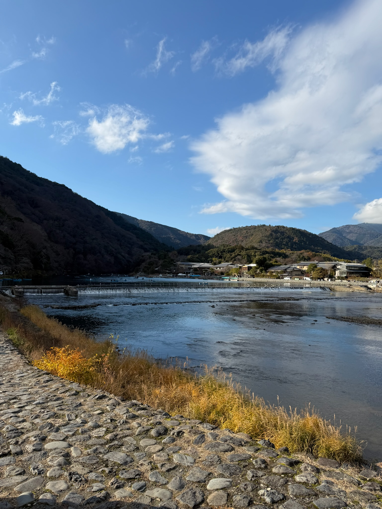

2 about me
▢ centreville, virginia
⤷ kkim18@risd.edu 2
♡ currently cafe hopping, puzzle solving, and musical watching
𓎩 as a foodie here is my food guide for providence, rhode island...
- coffee exchange - 207 wickenden st
- seven stars bakery - 103 point st
- frank and laurie's - 110 doyle ave
- al forno - 577 s water st
- palo - 3 steeple st
- pizza marvin - 468 wickenden st
⟡ recent travels to kyoto, japan
